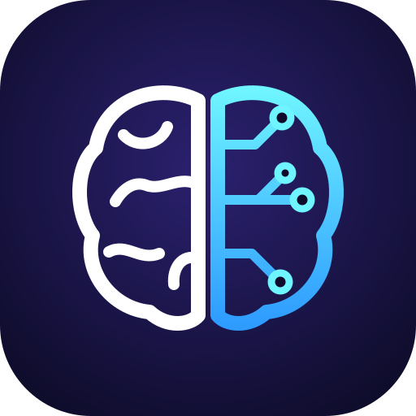

Mind WiredPrivacy policy
MEDIAOS · effective 31 October 2026
MEDIAOS is a private video-production tool run by Mind Wired for its own YouTube channel. It is not offered to the public. The only Google account that signs in to it is the channel owner's, so "you" below means the owner of the connected YouTube channel.
YouTube API Services
MEDIAOS uses YouTube API Services: the YouTube Data API and the YouTube Analytics API. Using MEDIAOS means agreeing to the YouTube Terms of Service. Google's handling of your data is described in the Google Privacy Policy.
What MEDIAOS accesses and stores
- Your channel's identity: the channel ID and title, read once when you connect it.
- OAuth tokens: the access and refresh tokens Google issues when you connect the channel, stored encrypted.
- Videos MEDIAOS publishes for you: each video's YouTube ID, link and upload status, and the playlists on your channel it adds them to.
- Comments on your recent videos: the public comments viewers leave on your videos from the last two weeks (the comment's ID and text, and the commenter's channel ID, used only to skip your own comments and threads you already answered), read so MEDIAOS can reply to them as your channel.
- Your channel's analytics (YouTube Analytics API): for each of your videos, views, likes, comments, shares, watch time, average view duration and percentage, subscribers gained, and the audience retention curve (the share of viewers still watching at each point of the video). Once the channel is monetized, also estimated revenue. For the channel as a whole, subscriber, view and video counts.
Apart from those public comments, MEDIAOS does not access information about the people who watch your videos, and it stores no other channel's statistics.
How it is used and shared
- To upload your approved videos to your channel, with their title, description, tags, thumbnail and a comment, to add them to playlists on your channel, and to update a video's title when you have turned that on. While YouTube keeps this tool's uploads private, an upload that comes back private is deleted again and you upload that video by hand.
- To reply to viewers' comments on your recent videos as your channel. The comment's text and your video's script are sent to an AI model provider (Anthropic, maker of Claude) to draft a short reply, which is posted as a reply to that comment. Comments with links, spam or abuse are not answered.
- To measure how your videos perform, so MEDIAOS can suggest topics, formats, posting times and titles for future videos. These figures are shown only to you, on a dashboard that runs on your own computer.
- Once a week, the titles of your recent videos, a performance tier MEDIAOS computes from their analytics, and where in each video viewers stopped watching (with the line being said there) are sent to an AI model provider (Anthropic, maker of Claude) to suggest improvements to future scripts. Anthropic handles them under its own terms and privacy policy.
- Nothing is sold, and nothing is shared with anyone else, including advertisers.
Where it is stored
All of the data above is kept in a database on the channel owner's own computer, not on a hosted service.
Cookies and device storage
The MEDIAOS dashboard runs on the owner's computer and sets one session cookie there to keep the owner signed in. These web pages set no cookies.
Third-party content
MEDIAOS shows no advertising. Videos it produces use licensed stock footage from Pixabay and Pexels, and their descriptions may contain affiliate links chosen by the channel owner.
How long data is kept
- Analytics are refreshed at least daily with your authorization, and kept while your channel is connected.
- If you disconnect the channel in MEDIAOS, it revokes its access at Google and deletes the stored analytics, comment records and playlist records at once.
- If you revoke access from your Google account instead, MEDIAOS stops using the channel straight away and deletes the stored analytics, comment records and playlist records within 30 days.
- The text of viewers' comments is deleted 30 days after it was read; only the comment's ID and your reply are kept, so no comment is answered twice.
- Rendered video files are deleted a few days after they are published.
Revoking access and deleting your data
You can revoke MEDIAOS's access to your YouTube data at any time on the Google security settings page. To have your stored data deleted, write to the contact address below. It will be deleted within 7 days.
Contact
Questions or complaints about privacy: github.com/klanssrklbp/mediaos-legal/issues.
Changes
If this policy changes, the new version will be posted here with a new effective date.